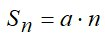

I. Числовые ряды. Сходимость числовых рядов.
Сумма ряда
Пусть задана бесконечная последовательность чисел :
то есть известен закон, по которому можно вычислить любой член последовательности.
Выражение (1) называется числовым рядом, а сами числа называются членами ряда. Общим членом ряда называют закон , по которому любой член последовательности может быть вычислен по его номеру. Сумма конечного числа n первых членов ряда называется n-ой частичной суммой ряда Если существует предел последовательности n-ых частичных сумм ряда то его называют суммой ряда и говорят, что ряд (1) сходится. Если конечный не существует, то ряд (1) расходится и суммы не имеет.Пример.
Рассмотрим ряд, образованный членами геометрической прогрессии.(2)
Общий член ряда . Известно, что сумма n первых членов геометрической прогрессии Если , то . В этом случае ряд (2) сходится и его сумма равна Если |q|< 1, то , и ряд (2) расходится. Если q = 1, то ряд (2) принимает вид a+a+a+a+... В этом случае  и , то есть ряд (2) расходится.